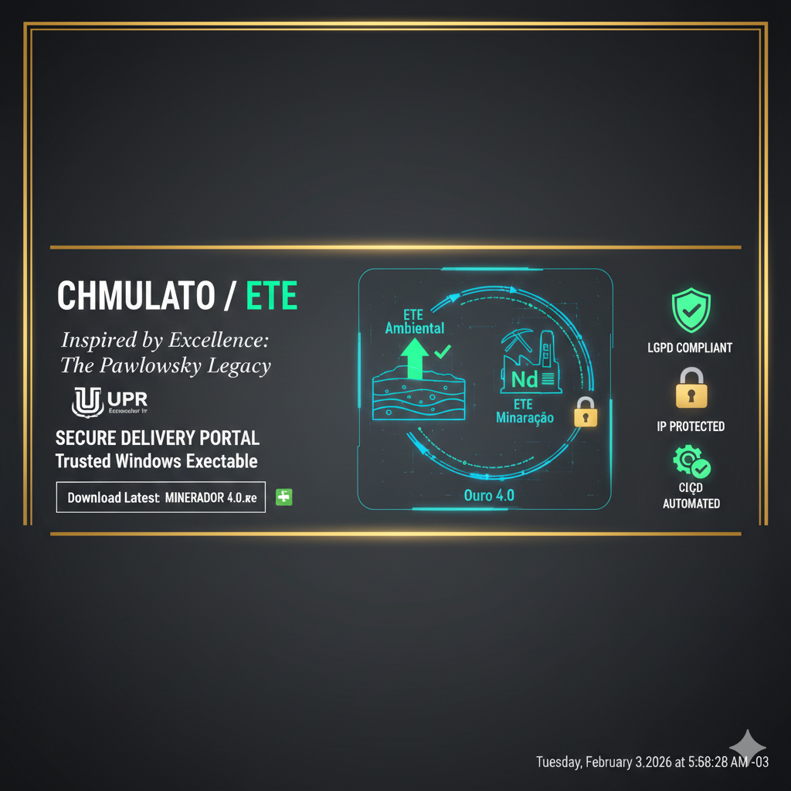

O que é o Minerador 4.0?
Aplicativo Windows Free para avaliacao + upgrade Ouro 4.0 (R$ 29,90, valor unico). Liberacao Premium ocorre somente apos confirmacao de pagamento e registro LGPD do atendimento.
Baixar grátis — Windows Conhecer upgrade Ouro 4.0 (R$ 29,90)

Simulador de Hidrometalurgia Seletiva: Aplicando a Engenharia de Processos de Efluentes no Refino de Terras Raras.
O Brasil possui o conhecimento e as reservas; este projeto entrega a ferramenta de simulação para viabilizar a separação seletiva com custos competitivos.
Utilizamos a robustez e a modularidade das Estações de Tratamento de Efluentes (decantação fracionada, lodos ativados e tanques em cascata) para resolver o desafio complexo da separação de lantanídeos em ambientes de mineração e reciclagem industrial. A eficiência de custos (OPEX) e a escalabilidade são pilares da metodologia transferida para o refino de concentrados e soluções ricas de lixiviação (PLS).
Versao Free: entrega sem cobranca para avaliacao tecnica. Versao Premium: liberacao apenas apos confirmacao financeira. Todo atendimento e registrado com finalidade, consentimento e trilha de auditoria em conformidade com a LGPD.
Plantas centralizadas exigem alto CAPEX e escala mínima. A abordagem ETE permite implantação modular: estágios de precipitação e decantação com investimento fracionado, viabilizando jazidas economicamente marginais e reduzindo a barreira de entrada ao refino.
O aplicativo Minerador 4.0 (Campo Largo: Terras Raras) está disponível como instalador .exe para Windows. Cálculos validados por PyTest; checksums SHA-256 e MD5 para verificação de integridade.
Para abrir o simulador com tema verde/sustentável: execute na raiz do repositório streamlit run src/ete_residencial/app_residencial.py ou python run_residencial.py. Relatório focado em Redução de Impacto Ambiental.
Para abrir o simulador com tema industrial/sóbrio: execute streamlit run src/ete_mineracao/app_mineracao.py ou python run_mineracao.py. Relatório focado em Gramas de Óxido por Tonelada e Margem de Lucro Bruta.